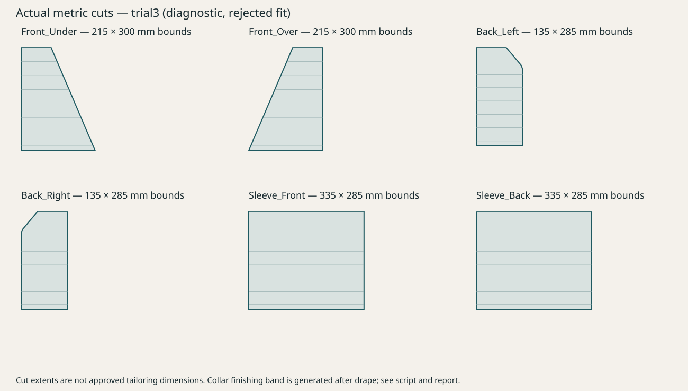

FAIL về mỹ thuật. Khuyến nghị: ABANDON cấu hình tự động này. Chưa được người dùng duyệt.
Sewing constraints và mô phỏng đã chạy thật, nhưng cổ–vai nhăn vỡ, tay áo không giữ silhouette ở neutral. Không tích hợp vào model đầy đủ. Cả hai bên dùng cùng mannequin, góc máy, gray clay và ánh sáng.
Phần tay áo đối diện và mép dưới baseline được cắt trong bản sao để khớp phạm vi. Không chấm các biên cắt đó. Prototype chỉ có một tay áo; mannequin có cổ/thân đã cắt và đầu trơn. Cổ finishing band được tạo sau solve, không có solve vải riêng. Mesh đóng băng dùng weld cạnh may; weld không chứng minh sewing hội tụ.

Báo cáo, số liệu và thiếu sót · Bốn phương án · Retopo / rig / VRM · Gallery Recovery v2 gốc